승강기기능사 (2006-10-01 기출문제)
1과목: 승강기개론
1. 엘리베이터용 10호 로프의 구성기호가 6×S(19)인 것의 구성은?
- 휘이링톤형 19조선 6연 중심섬유
- 플랫형 삼각심 19조선 6연 중심섬유
- 필러형 19조선 6연 중심섬유
- 시일형 19조선 6연 중심섬유
(정답률: 43%)

2. 승강기의 안전에 관한 장치가 아닌 것은?
- 세이프티 블록
- 눌름버튼 스위치
- 용수철완충기
- 조속기
(정답률: 79%)
3. 에스켈레이터의 손잡이(Hand Rail)의 속도를 발판(step)의 속도와 비교하면?
- 빨라야 한다.
- 느려야 한다.
- 같아야 한다.
- 한 쪽은 빠르게 다른 한쪽은 다르게 한다.
(정답률: 89%)
4. 권상기의 구동방식의 분류로 구분하지 않은 것은?
- 트랙션식
- 권동식
- 체인구동식
- 전동기식
(정답률: 31%)
5. 권동이나 도르레는 로프의 몇 배 이상의 지름을 사용하는가?
- 10
- 20
- 30
- 40
(정답률: 54%)
6. 카측의 총중량이 2500kg이고 카 주 2본의 단면적이 25cm2일 때 카 주의 안전율은 얼마인가?(단, 파단강도는 4100kg이다)
- 37
- 41
- 45
- 48
(정답률: 52%)
7. 수평보행기의 디딤판의 속도에 관한 기준으로 맞는 것은?
- 경사도가 6도 이하의 것은 속도 60m/min 이하
- 경사도가 6도 초과의 것은 속도 50m/min 이하
- 경사도가 8도 이하의 것은 속도 50m/min 이하
- 경사도가 8도 초과의 것은 속도 60m/min 이하
(정답률: 54%)
8. 도어머신(door machine) 장치가 갖추어야 할 요구조건이 아닌 것은?
- 소형경량이고 가격이 저렴하여야 한다.
- 대형이고 무거워야 한다.
- 동작이 원활하고 소음이 적어야 한다.
- 고빈도의 작동에 대한 내구성이 강해야 한다.
(정답률: 79%)
9. 엘리베이터의 도어 시스템에 대한 설명으로 틀린 것은?
- 승객용 엘리베이터에는 반드시 카 도어가 설치되어야 하고 이것은 동력으로 개폐되어야 한다.
- 승객용 엘리베이터의 개폐방식으로는 중앙개폐형, 측면개폐형, 상하개폐형 등이 있다.
- 침대용의 경우 카의 길이가 길기 때문에 측면개폐형이 주로 적용된다.
- 승객용 엘리베이터 카 도어에는 반드시 세이프티 슈(safety shoe)가 설치되어야 한다.
(정답률: 44%)
10. 유압 엘리베이터의 작동유에 대한 것으로서 기름 온도는 어느 범위로 관리하는 것이 바람직 한가?
- -10℃ 이상 45℃ 이하
- 0℃ 이상 55℃ 이하
- 5℃ 이상 60℃ 이하
- 10℃ 이상 75℃ 이하
(정답률: 84%)
11. 에스컬레이터의 핸드레일의 종류로 과거나 현재에 사용되고 있지 않은 것은?
- 스틸코드 핸드레일
- 스틸플레이트 핸드레일
- 화학섬유 핸드레일
- 천연섬유 핸드레일
(정답률: 43%)
12. 승강로 정상부와 균형추상의 거리 A와 카와 완충기간의 간격B로 옳은 것은?
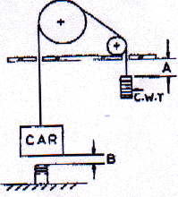
- A : 1500mm B : 400mm
- A : 300mm B : 1000mm
- A : 400mm B : 1500mm
- A : 400mm B : 400mm
(정답률: 50%)
13. 승객용 엘리베이터에서 카(car)와 틀(car frame)의 구조로 옳은 것은?
- 카 상부틀에 카가 고정되어 있다.
- 카 세로틀에 카가 고정되어 있다.
- 카 틀과 카는 분리시켜 고무쿳션으로 지지토록 되어 있다.
- 카 틀 전체에 카가 고정시켜 있다.
(정답률: 41%)
14. 유압 엘리베이터에서 케이지 상승시의 제어방식에 대한 설명으로 틀린 것은?
- 유압제어 밸브를 모두 닫으면 전속이 된다.
- 정지해야 할 층에 가까워지면 유량제어 밸브를 열어 작동유의 일부는 탱크로 되돌려 보낸다.
- 정지해야 할 층에 가까이에서는 1/8정도의 속도로 된다.
- 유량제어밸브를 모두 열어 작동유를 전량 탱크로 보내면 케이지는 정지한다.
(정답률: 38%)
15. 유압 엘리베이터의 플런저를 구동시키는 원리는?
- 파스칼의 원리
- 기전력의 원리
- 아르키메데스의 원리
- 피타고라스의 원리
(정답률: 45%)
2과목: 안전관리
16. 로프식 승강기의 기계실에 대한 설명중 틀린 것은?
- 주요한 기기로부터 기동이나 벽까지의 수평거리는 30cm 이상으로 한다.
- 조명 및 환기는 적당하고, 온도는 40℃ 이하로 유지하여야 한다.
- 출입문은 승강기의 고장시 신속히 처리할 수 있도록 개방되어야 한다.
- 기계실의 크기는 승강로 수평투영면적의 2배 이상으로 한다.
(정답률: 59%)
17. 승강기 도어머신의 설치에 대하여 옳게 설명한 것은?
- 리미트 스위치
- 파이널 리미트 스위치
- 록다운 정지장치
- 종단층 강제감속장치
(정답률: 27%)
18. 45~1⑤m/min까지의 승용 엘리베이터에 주로 적용되는 제어는?
- 일단속도제어
- 이단속도제어
- 궤환제어
- VVVF제어
(정답률: 26%)
19. 전선을 연결하거나 철거할 때 안전상 가장 적당한 것은?
- 전원쪽부터 연결
- 부하쪽부터 연결
- 임의로 철거
- 임의로 연결
(정답률: 51%)
20. 재해발생시의 조치내용으로 볼 수 없는 것은?
- 피해자를 구출하고 2차 재해방지
- 재해방지대책의 수립과 실시
- 안전교육 계획의 수립
- 재해원인 조사와 분석
(정답률: 79%)
21. 감전사고를 방지하기 위한 대책으로 볼 수 없는 것은?
- 작업자에 대한 안전교육
- 전기기기에 위험 표시
- 대지전압 220V 이하의 전기기기만 사용
- 발견된 불량 부분은 원인을 조사하고 필요한 대책을 강구한다.
(정답률: 76%)
22. 감전과 전기화상을 입을 위험이 있는 작업에서 구비해야 하는 것은?
- 보호구
- 구명욱
- 토글스위치
- 회로시험기
(정답률: 80%)
23. 주의부족을 야기시키는 요인이 아닌 것은?
- 개성
- 습관성
- 감정의 불안전
- 체격
(정답률: 66%)
24. 승강기 보수점검시의 안전장치에 대한 설명이 아닌 것은?
- 보수점검 중이라는 표시를 할 것
- 보수점검자 성명 및 보수점검자 연락처를 기입할 것
- 보수점검 개소 및 소요시간을 표시할 것
- 보수내용 및 보수금액을 표시할 것
(정답률: 84%)
25. 적성배치, 안전교육, 훈련, 감독, 교정 및 작업자의 자각을 드높이는 것은 다음 중 누구의 합리적인 태도로 볼 수 있는가?
- 배치 계획자
- 작업 숙련자
- 기계 관리자
- 안전관리자
(정답률: 76%)
26. 작업자의 불안전한 상태가 아닌 것은?
- 작업에 대하여 자신을 가지고 있는 경우
- 즉흥적인 판단을 하는 경우
- 복합 동작을 하는 경우
- 작업에 사용되는 공구가 부족한 경우
(정답률: 62%)
27. 다음 중 운행관리자가 될 수 있는 사람은?
- 보수업체 직원으로 매월 1회 점검하는 사항
- 전기실에 근무하는 승강기기능사 자격을 가진 사람
- 경비실에 근무하는 경비원
- 검사기관의 정기검사자
(정답률: 60%)
28. 작업자가 감전되었을 경우의 구출방법으로 틀린 것은?
- 절연봉 등을 이용하여 감전자를 전로로부터 떼어 놓은 후 응급치료한다.
- 건조한 나무나 고무 등의 절연물을 이용하여 감전자를 충전부분에서 떼어 놓은 후 응급치료한다.
- 감전되어 오래되면 사망하므로 빨리 맨손으로 직접 구출하여 응급치료 한다.
- 주위여건으로 위험하여 감전자를 구출할 수 없을 때는 변전소에 급보하여 전원을 차단한 후 구출한다.
(정답률: 82%)
29. 유압식 승강기는 바닥보정장치를 설치하도록 하고 있다. 몇 mm 이내에서 작동하여야 하는가?
- 55
- 65
- 75
- 85
(정답률: 58%)
30. 승강기의 문에 관한 설명 중 틀린 것은?
- 문닫힘 도중에도 승강기의 버튼을 동작시키면 다시 열려야 한다.
- 문이 완전히 열린 후 최소 일정 시간 이상 유지되어야 한다.
- 멈춤지역 이외의 지역에서 카 내의 문 개방 버튼을 동작시켜도 절대로 개방되지 않아야 한다.
- 문이 일정 시간 후 닫히지 않으면 그 상태를 계속 유지하여야 한다.
(정답률: 76%)
3과목: 승강기보수
31. 주로프(권상로프)의 소켓팅에 관한 설명으로 틀린 것은?
- 바빗트를 채운 단부의 꼬임을 굽힌 부분이 명확히 보이도록 한다.
- 주로프의 고정금구는 이중너트로 견고히 한다.
- 주로프의 고정금구를 채운후 분할핀을 반드시 끼워야 한다.
- 주로프 바빗트는 2단 붓기를 하여도 무방하다.
(정답률: 59%)
32. T형 가이드 레일에는 8, 13, 18, 24k 레일이 있는데 8, 13, 18, 24라는 숫자는 무엇을 나타내는 것인가?
- 가이드 레일 1본의 무게
- 가이드 레일 1본의 길이
- 가이드 레일 1m의 무게
- 가이드 레일의 형상
(정답률: 64%)
33. 정전으로 인하여 카가정지될 때 점검자에 의하여 주로 사용되는 밸브는?
- 하강용 유량제어 밸브
- 스톱밸브
- 릴리프 밸브
- 체크 밸브
(정답률: 43%)
34. 팬터그래프식은 어디에 해당하는 승강기인가?
- 스크루식 간접식 엘리베이터
- 간접식으로 구동하는 유압식 엘리베이터
- 스크루식 직접식 엘리베이터
- 직접식으로 구동하는 유압식 엘리베이터
(정답률: 39%)
35. 간접식 유압 엘리베이터의 특징이 아닌 것은?
- 실린더의 점검이 용이하다.
- 부하에 의한 카의 빠짐이 비교적 작다.
- 승강로는 유압잭을 수용할 부분만큼 직접식보다 더 커지게 된다.
- 실린더가 필요이상으로 빠지지 않기 위한 비상정지장치가 필요하다.
(정답률: 48%)
36. 에스컬레이터의 제어장치에 관한 설명 중 틀린 것은?
- 방화셔터가 핸드레일 반환부의 선단에서 2m 이내에 있는 에스컬레이터는 그 셔터와 연동하여 작동해야 한다.
- 전원의 상이 바뀌면 주행을 멈출 수 있는 장치가 필요하다.
- 제어반의 각종 단자나 부품의 상태가 양호한지 확인한다.
- 감속기의 오일온도가 60℃를 넘을 경우 정지장치가 필요하다.
(정답률: 43%)
37. 피트 내에서 행하는 검사가 아닌 것은?
- 피트스위치 동작 여부
- 하부 파이널스위치 동작 여부
- 완충기 취부상태 양호 여부
- 상부 파이널스위치 동작 여부
(정답률: 56%)
38. 균형추의 무게 결정과 관계없는 것은?
- 카 자체 하중
- 정격 적재하중
- 로프무게
- 속도
(정답률: 54%)
39. 균형추 측에도 비상정지장치를 설치해야 되는 경우는?
- 속도 150m/min 이상의 고속 승강기
- 정격 적재량 2000kg 이상의 승강기
- 균형추측 하부에 완충기 설치를 생략하는 구조일 때
- 승강로(PIT) 아래를 사람이 출입하는 장소로 이용될 때
(정답률: 46%)
40. 제어반에서 점검할 수 없는 것은?
- 단자의 조입상태
- 전선의 손상정도
- 계전기의 발연상태
- 눌름(부름)버튼의 점검
(정답률: 56%)
41. 승용 승강기의 외부 도어 실과 내부 도어 실과의 간격은 몇 mm 이하로 하는가?
- 40
- 45
- 50
- 55
(정답률: 35%)
42. 교류 일단속도제어를 설명한 것으로 옳은 것은?
- 기동은 고속권선으로 행하고 감속은 저속권선으로 행하는 것이다.
- 모터의 계자코일에 저항을 넣어 이것을 증감하는 것이다.
- 기동과 주행은 고속권선으로, 감속과 착상은 저속권선으로 행하는 것이다.
- 3상교류의 단속도 모터에 전원을 투입함으로써 기동과 정속운전을 하고 착상하는 것이다.
(정답률: 45%)
43. 수평보행기의 안전장치에 해당하지 않는 것은?
- 스템체인 안전스위치
- 스커트 가드 안전스위치
- 비상정지스위치
- 핸드레일 인입구 안전스위치
(정답률: 46%)
44. 조속기에 대한 설명으로 틀린 것은?
- 과속 스위치는 반드시 수동으로 복귀해야 한다.
- 속도 90m/min인 승강기의 과속 스위치는 정격속도 1.3배 이하에서 작동해야 한다.
- 균형추측에 조속기가 있는 경우 카측보다 먼저 작동해야 한다.
- 과속 스위치는 상승 및 하강의 양 방향에서 작동해야 한다.
(정답률: 38%)
45. 로프식 엘리베이터의 카 틀에서 브레이스 로드의 분담하중은 대략 어느 정도 되는가?
- 1/8
- 3/8
- 1/3
- 1/16
(정답률: 55%)
4과목: 기계,전기기초이론
46. 상승용 에스컬레이터의 상부 천이구간의 곡률 반경은 정격속도가 30m/min 초과하는 경우에 각각 몇 m 이상으로 하여야 하는가?
- 30m/min 이하인 경우 : 0.4m 이상
- 30m/min 초과인 경우 : 2m 이상
- 30m/min 이하인 경우 : 1m 이상
- 30m/min 미만인 경우 : 2m 이상
(정답률: 37%)
47. 다음 회로에서 A, B 간의 합성용량은 몇 ㎌인가?
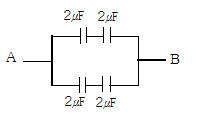
- 1
- 2
- 4
- 8
(정답률: 58%)
48. 그림과 같은 2개의 저항 R1[Ω], R2[Ω]를 병렬로 접속하고 전압 V[V]를 가할 때 I1은 몇 A인가? (단, 회로의 전 전류는 I[A]이다)
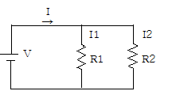
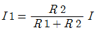
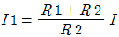
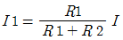
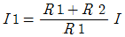
(정답률: 39%)
49. 반도체로 만든 PN 접합은 무슨 작용을 하는가?
- 증폭작용
- 발진작용
- 정류작용
- 변조작용
(정답률: 59%)
50. 구름 베어링이 미끄럼 베어링에 비해 좋지 않은 점은?
- 신뢰성
- 윤활방법
- 마멸
- 기동저항
(정답률: 32%)
51. 다음 중 측정계기의 눈금이 균일하고, 구동토크가 커서 강도가 좋으며 외부의 영향을 적게 받아 가장 많이 쓰이는 아날로그 계기 눈금의 구동방식은?
- 영구 자석과 전류에 의한 자기장 사이의 힘
- 두 전류에 의한 자기장 사이의 힘
- 자기장 내에 있는 철편에 작용하는 힘
- 충전된 물체사이에 작용하는 힘
(정답률: 45%)
52. 어떤 물체의 영(Young)률이 작다는 것은?
- 안전하다는 것이다.
- 불안전하다는 것이다.
- 늘어나기 쉽다는 것이다.
- 늘어나가 어렵다는 것이다.
(정답률: 59%)
53. “비례한도내에서 응력과 변형률은 비례한다.” 이것은 무슨 법칙인가?
- 나비에의 법칙
- 불변의 법칙
- 후크의 법칙
- 장력의 법칙
(정답률: 64%)
54. 계전기회로에서 일종의 기억회로라고 할 수 있는 것은?
- AND회로
- OR회로
- 자기유지회로
- NOT회로
(정답률: 74%)
55. 3상 유도전동기가 역회전할 때의 대책으로 옳은 것은?
- 퓨즈를 조사한다.
- 전동기를 교체한다.
- 3선을 모두 바꾸어 결선한다.
- 3선의 결선 중 임의의 2선을 바꾸어 결선한다.
(정답률: 81%)
56. 직류 분권전동기의 계자저항을 운전 중에 증가시킬 때의 현상으로 옳은 것은?
- 자속 증가
- 속도 감소
- 속도 증가
- 부하 증가
(정답률: 34%)
57. M[kgㆍ cm]를 굽힘모멘트, σ[kg/cm2]를 최대굽힘응력, 단면계수를 Z[cm3]라 할 때 굽힘모멘트와 굽힘응력 사이의 관계식은?
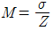
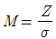
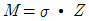
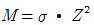
(정답률: 31%)
58. 배전반용 계기로 가장 많이 사용되는 계기는?
- 가동코일형
- 가동철편형
- 열선형
- 전류역계형
(정답률: 26%)
59. 마찰차의 접촉면을 기준으로 하여 그 원주에 이를 만들어 서로 물림에 따라 운동을 전달하게 하는 것은?
- 베어링
- 스프링
- 기어
- 커플링
(정답률: 46%)
60. 어떤 전열기 1kw를 2시간 동안 사용하였을 때 발생한 열량을 몇 kcal 인가?
- 430
- 860
- 1720
- 2000
(정답률: 59%)